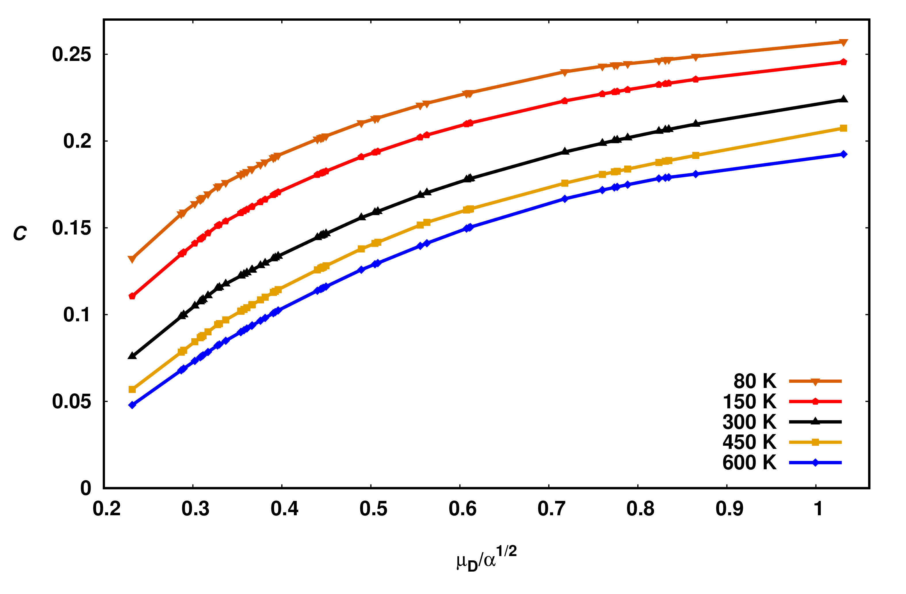

Many theoretical descriptions are available for the calculation of rate coefficients of exothermic
ion-molecule reactions. A general form of the capture collision cross-section was derived by
Gioumousis and Stevenson based on the concepts developed by Langevin and applied to a reaction
between a point ion and a spherical (non-polar) molecule. Whenever an ion approaches a neutral
molecule having no permanent dipole, its Coulomb field induces
a dipole within the neutral due to the long-range attractive force. The Langevin's model was based on
the pure polarization theory which calculates the collision cross-section of an ion-molecule pair with a
relative velocity. The assumption was based on the simple case of point charge particle interacting
with non-polar neutral molecule. The capture collision rate is given by
$$ {\rm k}_{\rm Lang}=\sqrt{\frac{\pi \alpha q^{2}}{\mu \epsilon_{0}}} ,$$
where $ \alpha $ represents the polarizability of the neutral molecule, q is the charge of the ion,
and represents the reduced mass of the reactants. The model was applicable to low collision energies
where long-range force such as ion-induced dipole dominates the collision dynamics and supply near-quantitative
picture of ion-molecule reactions. It established an upper limit to the measured rate coefficients. Although, it
could not provide energy dependence and temperature dependence of the rate coefficients.
Average Dipole Orientation Theory (ADO)
Later, a comprehensive description of ion-molecule collision rate coefficient dependent on energy and temperature
is provided by Su and Bowers. The suggested that in the case of polar molecules it is necessary not only to account
for the ion-induced dipole interaction but also to consider the interaction between the ion
and the permanent electric dipole moment ($\mu_{D}$) of the neutral molecule,
$$ {\rm k}_{\rm ADO} = \sqrt{\frac{\pi \alpha q^{2}}{\mu \epsilon_{0}}}
+\frac{C\mu_{\rm D}\, q}{\epsilon_0}\sqrt{\frac{1}{2\pi\mu \it k_{\rm B} T}} ,$$
where $C$ represents the dimensionless 'locking' parameter (0 $\le$ C $\le$ 1) that accounts for the
average orientation of the permanent dipole moment of the neutral molecule. ADO theory provide theoretical
prediction of the rate coefficient for a reaction between a point ion
and a polar molecule that account for both the charge-induced dipole interaction and the
ion-permanent dipole interaction. However, rate coefficients obtained from ADO theory were underestimated by
10-20$\%$ but it provides a means of obtaining decent estimates of
rate coefficients for proton transfer reactions where the experimental values are unknown.
Recipe to Calculate Orientation Parameter 'C'
The dipole locking parameter, $C$ depends on the degree that the dipole is aligned with the
ionic charge during the collision. $C$ ranges between 0 (no-alignment) to 1 (locked dipole).
The $C$ parameter depends on the electric dipole moment $\mu_{D}$ and polarizability $\alpha$ of the
neutral molecule. The parameter $C$ is also a function of temperature. $C$ value which is not in the range
of temperature 150 to 500 K are obtained by linear interpolation of corresponding published
values between 150 to 500 K (see ref. 5). In contrast, the values at 80 K and 600 K are obtained by
linearly extrapolating the published $C$ values relative to the two closest temperatures. Some of the results
are plotted in the figures.

The dipole locking constant $C$ as a function of $\mu_{D}/{\sqrt\alpha}$ at temperatures 80 K
to 600 K.
Classical Trajectory Method
An alternative approach is to model the reaction
process through a series of classical trajectory calculations is given by Su and Chesnavich. They studied series
of trajectories in order to model ion-molecules reaction process and
obtained a parametrized expressions:
$$ \rm k_{\rm cap}(\it T,{\rm CT})=\rm k_{\rm Lang} \, \it K_{\rm cap}(T_R, {I}^{\star})\,.$$
The parameterized quantity $\it K_{\rm cap}(T_R, {I}^{\star})$ is a function of two reduced
parameters: the dimensionless reduced temperature, $T_{R}$ , and the moment of inertia, $I^{\star}$, of
the neutral molecule. Reduced temperature is given as
$$ T_{R}=4\pi\epsilon_{0} \frac{2\alpha k_{B}T}{\mu_{\rm D}^2}.$$
and the dimensionless parameter
$$ I^{\star}= \frac{\mu_{\rm D}I}{\alpha q \mu}.$$
$I$ is the moment of inertia of the neutral molecule and other symbols are same as defined
earlier. The results from various trajectories obtained by Su and Chesnavich suggested that
the value of $K_{cap}$ is insensitive to $I^{\star}$ when
$$I^{\star} < \frac{0.7+x^{2}}{2+0.6x}.$$
where
$$x= T_{R}^{-1/2}$$
For majority of the molecular species studied in PTR-MS, the values of $\alpha$, $\mu_{D}$ and $I$ are
such that $K_{cap}$ lies in the insensitive region because above inequality applies. Under such
circumstances, $K_{cap}$ depends only on $T_{R}$ , i.e. on $x$, and its value is parameterized as follows:
$$ K_{\rm cap}=\begin{cases}
({x}+0.5090)^2/10.526+{0.9754}, & x \leq 2\\
0.4767\,x+0.6200, & 2 < x \leq 3\\
0.5781\,x+0.3165, & 3 < x \leq 35\\
0.6201\,x-1.153, & 35 < x \leq 60\\
0.6347\,x-2.029, & x < 60
\,.
\end{cases}.$$
Results obtained by the classical trajectory method provide rates higher than the ADO rate
coefficients. However, the experimental rates lie in between ADO and trajectory rates,
more closer to the rates by trajectory method. In particular, rates coefficients obtained
from the classical trajectory method yield better agreement with the experiments (within
$3\%$ error).
References :
P. Langevin. A fundamental formula for kinetic theory. Ann. Chim. Phys., 1905.
T. Su and M. T. Bowers. Theory of ion-polar molecule collisions. comparison with
experimental charge transfer reactions of rare gas ions to geometric isomers of difluo-
robenzene and dichloroethylene. The Journal of Chemical Physics, 1973.
T. Su and W. J. Chesnavich. Parametrization of the ion-polar molecule collision rate
constant by trajectory calculations. The Journal of Chemical Physics, 1982.
T. Su. Erratum: Trajectory calculations of ion-polar molecule capture rate constants at
low temperatures [j. chem. phys. 88, 4102 (1988)]. The Journal of Chemical Physics, 1988.
T. Su and M. T. Bowers. Parameterization of the average dipole orientation theory:
temperature dependence. Int. J. Mass Spectrom. Ion Process., June 1975.
T. Su and M. T. Bowers. Ion-polar molecule collisions. Proton transfer reactions
of H3+ and CH5+ to the geometric isomers of
difluoroethylene, dichloroethylene, and
difluorobenzene. Journal of the American Chemical Society, 1973.
A. M. Ellis, C. A. Mayhew. Proton Transfer Reaction Mass Spectrometry: Principles and Applications.
In John Wiley & Sons, 2013.